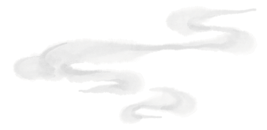
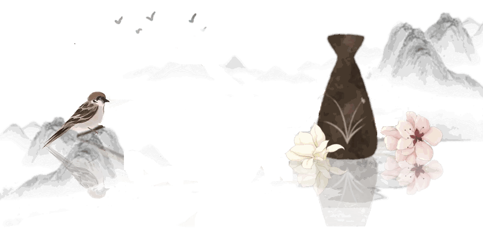
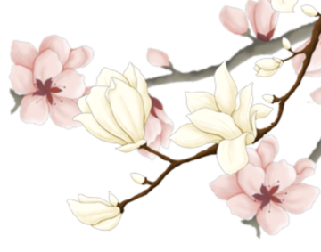
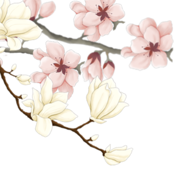
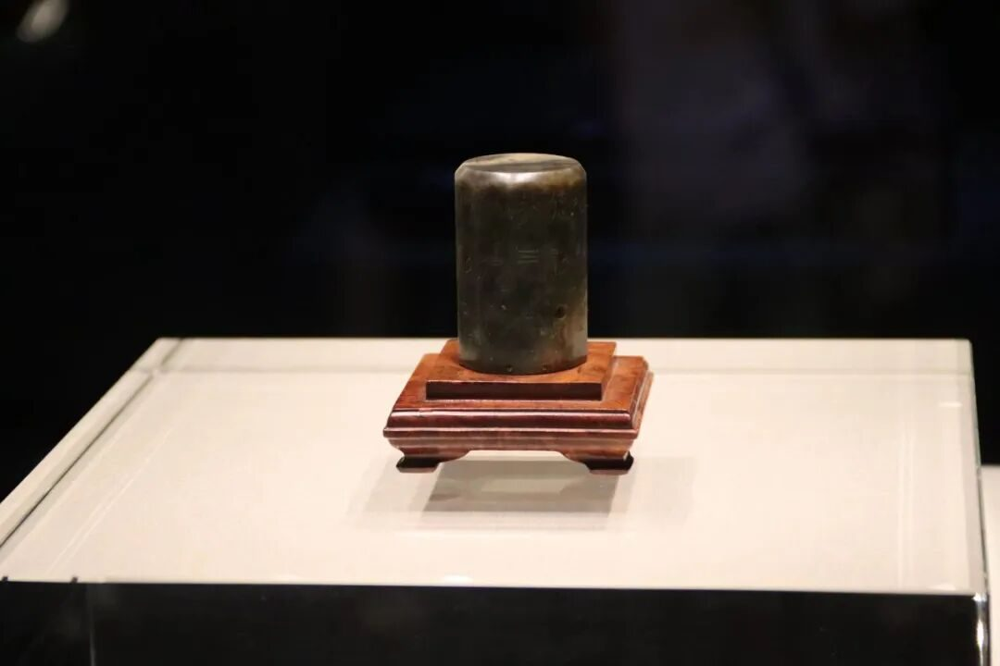
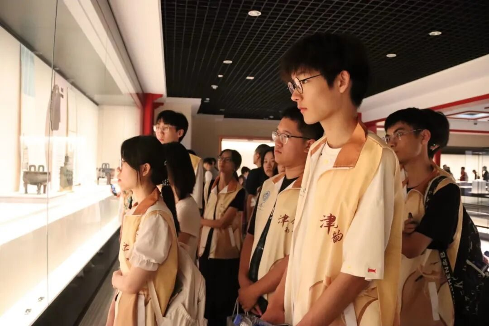
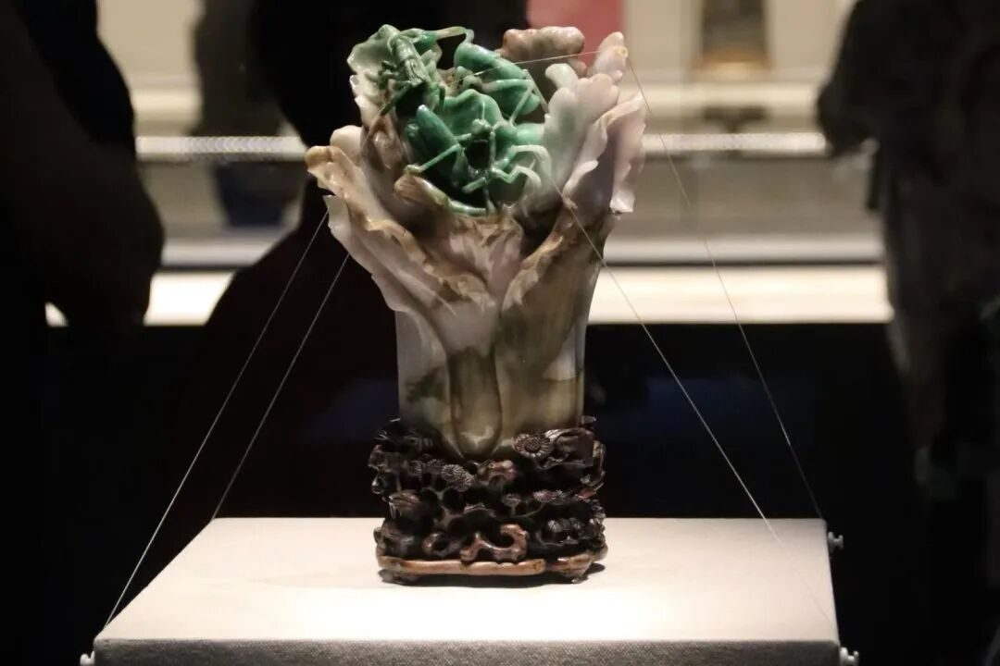
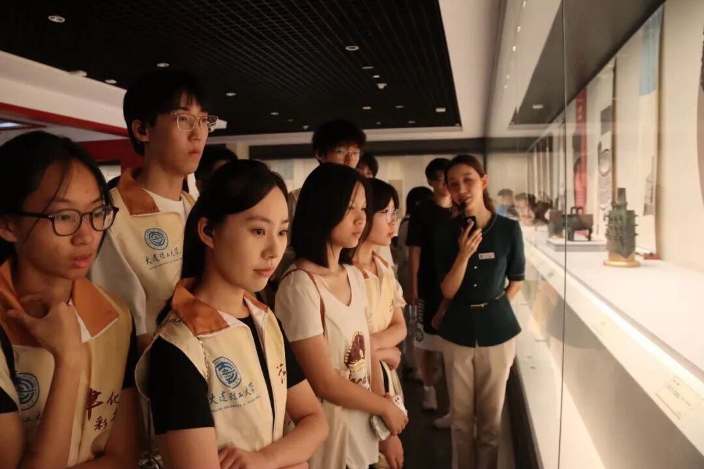
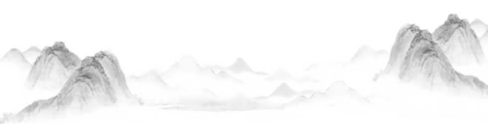
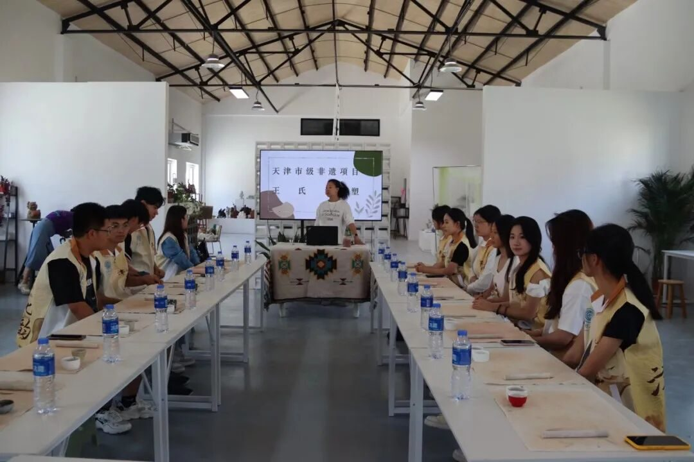

【行者无疆·津彩化韵】津门探韵寻真意，泥艺传薪续古风





Seeking Tianjin's Soul,
Passing the Clay Art
Tianjin Museum
天津博物馆




观古今文脉，寻非遗根魂


今天，行者们踏上天津沃土，在历史与匠心的交织中开启了充实的实践之旅。晨光初露，行者们踏入天津博物馆，在浩如烟海的馆藏中探寻天津非遗的历史踪迹。馆内，从古代器皿到近代民俗展品，无不勾勒出这座城市的文化图谱。
行者们重点驻足非遗展区，“观乎人文，以化成天下”，先贤之语在此刻有了更真切的注解。行者们跟随讲解员的带领，在聆听与交流中梳理天津非遗的发展脉络，为理解非遗现状打下基础。
Through Time
Unearthing Heritage Roots
Today, the explorers set foot on Tianjin soil, immersing themselves in its history and craftsmanship on a fulfilling journey. At dawn, they entered the Tianjin Museum. Within its vast collection, they traced the historical footsteps of Tianjin's intangible heritage. From ancient artifacts to modern folk exhibits, each piece reflects the city's cultural tapestry.
Through Time
Unearthing Heritage Roots
The explorers focused on the intangible heritage exhibits. The ancient adage, "Civilization shapes the world through culture," resonated deeply here. Guided by the docent, they mapped out Tianjin's heritage development through listening and discussion, laying the groundwork for understanding its current state.
向右滑动查看英文版本

Wang's Clay Sculpture
王氏泥塑

观古今文脉，寻非遗根魂
午后，行者们转而探访天津市非遗王氏泥塑第五代传承人王美老师。在兼具古朴与现代的工作室里，王美老师娓娓道来，从王氏泥塑的起源传说到技艺传承和发展的历程，将这项非遗技艺的向行者们做了详细的阐述。“匠心者，谓其巧也，谓其专也”，王美老师的讲述让行者们深刻体会到非遗传承背后那份坚守与热爱。
随后，行者们亲身参与到泥塑制作中，在老师的指导下，从揉泥、塑形到细节雕琢，亲手感受泥土在指尖焕发生机的过程。尽管初次尝试略显生涩，但每一位行者都全神贯注，在与泥土的互动中，真切触摸到非遗技艺的温度与力量。
一日的实践虽短，却让行者们在历史的回望与匠心的体悟中收获颇丰。从博物馆中汲取的文化养分，到非遗传承里感知的匠人精神，都将成为这段实践旅程中珍贵的印记，激励着他们在传承与弘扬优秀传统文化的道路上继续前行。
Craft Tales, Hands' Legacy
In the afternoon, the explorers visited Wang Mei, fifth-generation successor of the Tianjin intangible heritage Wang's Clay Sculpture. In her studio Wang Mei shared the art's origin stories, craft heritage, and evolution. Her detailed account embodied the essence of craftsmanship: skill and devotion. The explorers felt the deep perseverance and passion behind preserving this heritage.
The explorers then tried clay sculpting themselves. Guided by the master, they felt the clay come alive under their fingers—from kneading and shaping to carving details. Though their first attempts were awkward, each focused intently, truly touching the warmth and power of this heritage craft through the clay.
Though brief, this day offered rich rewards: reflecting on history and appreciating craftsmanship. The cultural insights from the museum and the artisan spirit felt through heritage transmission became treasured takeaways. These experiences will inspire them to carry forward and promote this vital cultural tradition.

向右滑动查看英文版本
来源 | 行者无疆实践团
图片 | 行者无疆实践团
文字 | 史子鸣
编辑 | 姜骅洲
审核 | 张瑶琪 杩健辉 李凌志
责编 | 邹靓靓 周 亮